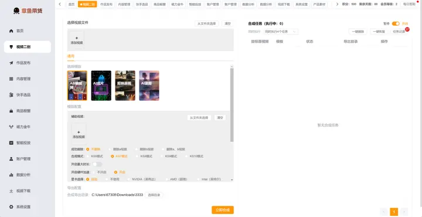

二创任务列表
模板化处理本地视频，支持任务队列、并行执行、失败原因和原视频预览。
「批量剪辑软件哪个好」「AI 成片工具哪个好用」「视频混剪软件哪个好用」这三句搜索，落点其实是同一个：一天要出多少条、每条要花几个人力、返工几次。这一页只讲章鱼带货的视频二创模块实际有哪些二创方式、素材怎么进来、成片往哪里去，以及哪些环节最容易翻车。
| 项目 | 说明 |
|---|---|
| 能做什么 | AB 视频、AI 成片、AI 混剪、剪映模板、AI 语音、人脸特效、人脸马赛克、人脸动画、声音克隆；支持任务队列、并行执行、失败原因查看和原视频预览。 |
| 输入 | 本地文件夹里的视频素材；选定的二创方式或剪映模板；需要叠加的人脸特效、声音克隆等处理。 |
| 输出 | 合成后的成片，进入作品发布的任务队列；可以配合多封面配置、定时发布和草稿复用一起用。 |
| 限制 | 素材得先在本地，所以要先过视频下载或产品素材库；画质与清晰度会随版本调整，v1.4.43 优化了混剪画面清晰度和自动发布模式 8 的画质；功能位置以软件界面为准。 |
| 失败提示 | 任务列表里能看到每个任务的失败原因，并可预览原视频做对照。启动异常在 v1.4.27 通过算法包优化做过修复，所以遇到启动失败先确认算法包已经装好、版本是最新版。 |
很多人以为差别在渲染速度。实际做过矩阵的人都知道，慢的从来不是渲染，而是渲染前后那两段：素材怎么进来，成片怎么发出去。手工剪辑的流程通常是「刷到合适的视频 → 一条条下载 → 改名归档 → 逐条剪 → 逐条上传」，中间每一步都要人盯着，而且改一遍标题就得重来一次。
批量剪辑真正省下的是三件事。第一是素材入口统一：链接、点赞、表格三种导入方式，替代复制粘贴和单条保存。第二是生产标准化：同一套模板和参数套到一批素材上，出来的成片规格一致，不会出现这条竖屏那条横屏。第三是任务可查：一条失败了，能看到失败原因，而不是只看到「生成失败」四个字。
所以「哪个好」这个问题，比较维度应该是产能和返工率，而不是单条成片有多惊艳。一条素材能不能稳定产出十条规格一致的成片，出问题能不能定位到具体任务，这才决定矩阵能不能长期跑下去。
资料里列出来的方式分成四组，覆盖的正是「换画面、换声音、换脸」这三类常见的去重需求。
操作路径在首页的功能描述里写得很直接：从文件夹添加素材，选择 AB 视频、AI 成片、AI 混剪或剪映模板，然后统一查看合成任务的进度。这条路径的好处是不需要先在别的软件里整理一遍，素材进队列之前只在本地文件夹里躺着。

模板化处理本地视频，支持任务队列、并行执行、失败原因和原视频预览。
同一套结构套不同素材，成片规格统一，方便按账号批量铺。
换声音不用重录，声音克隆从 v1.4.28 起可用。
二创是链条中间的一段，两头都得有人接。上游是素材：视频下载支持批量导入链接、从点赞导入、从表格导入，一键下载还能自动下载抖音素材并按商品自动匹配；产品素材库负责维护快手小店的产品素材，批量导入、并行解析、一键生成解析数据，让商品、素材和保存目录保持同步。下游是发布：作品发布支持多任务队列、并发发布、定时发布、草稿复用和失败重试。
把两头对上之后会发现一个规律：二创出问题的场景，十有八九不是二创本身。素材没下载全、商品 ID 缺失导致匹配错、素材分辨率和模板不匹配，这些问题都会在二创阶段以「合成失败」的形式冒出来。所以排查顺序建议反过来：先看素材是否完整、命名是否能对上商品，再看模板参数，最后才怀疑二创任务本身。
版本上也有一条和画质有关的线索。v1.4.43 的更新内容是优化混剪画面清晰度、新增多封面配置、优化自动发布模式 8 的画质；v1.4.38 则处理了一键下载的素材匹配和挂车失败。这说明画质和匹配这两类问题一直在被修，如果你手上的版本比 v1.4.43 老，先去更新日志页确认自己缺了哪些改动，比在旧版本上反复调参数更省时间。
下面这几条是我在资料里能确认、也建议在采购前先问清楚的：
二创的耗时和并发，跟素材分辨率、模板复杂度和本机配置都有关。与其看宣传数字，不如用你们自己的真实素材跑一小批：同一条素材跑一次和跑十条，看到的耗时完全不同。
最后一句实话：没有任何工具能保证二创出来的视频一定有流量。二创解决的是产能和规格统一，选题、投放和商品本身仍然是决定性的那几环。
顺着这条链路往下读：模板怎么按批次管，看 二创模板批量管理；什么规模的团队该上二创工具，看 AI 视频二创软件适合哪些团队；版本改了什么，看 更新日志。
看三条：一条素材能稳定出几条成片、成片规格是否一致、失败任务能不能定位到原因。速度只在素材量很大时才成为瓶颈。
AB 视频、AI 成片、AI 混剪、剪映模板、AI 语音、人脸特效、人脸马赛克、人脸动画和声音克隆。具体入口位置以当前软件界面为准。
取决于模板和素材的差异度。AB 视频和剪映模板是固定结构套不同素材，差异来自素材本身；多封面配置、随机封面和封面标题控制可以在封面层面做区分。更深一层的差异化需要靠素材和脚本，模板解决不了。
任务列表里能看到失败原因，也可以预览原视频做对照。如果整批任务都失败，先查算法包和软件版本，v1.4.27 就修过算法包导致的启动失败问题。
成片可以进入作品发布的任务队列，支持并发、定时、草稿复用和失败重试。发布环节的挂车失败问题在 v1.4.38 做过优化。
推荐 Windows 10 或 Windows 11，推荐 Chrome 129 到 136，另外需要下载算法包。当前资料版本是 Windows x64 v1.4.43。
建议先准备二十条真实带货素材，走一遍下载、二创、发布的完整链路，重点看两件事：成片规格是否统一，失败任务能不能一眼定位。这两件事通过了，再谈规模和价格。